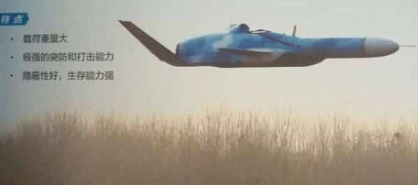
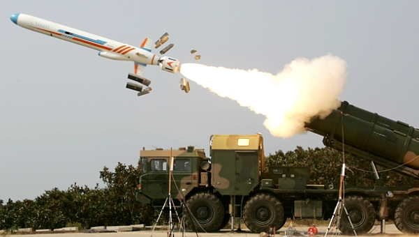

2017-05-16 07:12:00
美國的《Popular Mechanics》雜誌在五月4日刊出一篇文章（參見http://www.popularmechanics.com/military/weapons/a26382/china-sea-skimming-anti-ship-drone/ ），討論了最近泄露的一張據稱是共軍新式地效反艦飛彈的照片。五天後，《觀察者》登出了一篇評論（參見http://www.guancha.cn/military-affairs/2017_05_09_407411.shtml ），反駁了美國人的一些論點。但是就如同前文《共軍的超級大炮》一樣，中美兩邊的評論員都沒有說到癥結，所以我在此做個澄清。

這是引起評論的那張照片。從這個角度，並不能確定機翼的翼展。從彈頭上的空速管可以看出它還在早期測試的階段。
如同上次一樣，美國人有些十分離譜的論點，似乎是直接抄錄中國軍事論壇上的胡猜。他說這枚地效反艦飛彈的飛行高度只有18英寸，亦即半公尺左右；這代表著只有在0級和1級海況下，這枚地效反艦飛彈才能作戰。換句話説，在西太平洋，99%以上的日子都不能使用，這當然是個大笑話。
在冷戰期間，蘇聯在裏海實驗了幾個不同型號的地效飛行器，最大的一個，外號叫“裏海怪物”，長92米，翼展37米，重達500噸，但是即使在裏海這樣風平浪靜的内海，原型機還是因爲大浪而損毀。正因爲地效飛行器的抗損性太差，蘇聯認爲它作爲登陸艇沒有實用價值，轉而開發同樣噸位的氣墊船，也就是後來的野牛級。

共軍現役的YJ-62飛彈，助推火箭才剛引燃。它被設計來全程以500+節飛行，所以翼展只有2.9米。
傳統的地效飛行器的飛行高度與翼展成正比；既然照片裏說它“載荷重量大”，那麽這枚新飛彈應該不小於共軍現役的重型反艦飛彈YJ-62，也就是至少7米長。它的翼展從側面角度的這張照片很難確定，就算比長度還大，也不太可能超過10公尺。裏海怪物的翼展比它大了近4倍，飛行高度也就高了接近4倍，還因爲不耐風浪而不能實用化，所以這枚地效反艦飛彈必然不可能只是一個傳統的地效飛行器。
美國人說它的飛行速度是每小時600英里，亦即約530節，這比裏海怪物的極速270節還要高出一倍。YJ-62的速度是600節，反而和它相似。那麽問題就來了，速度和載重都和已經快淘汰的現役裝備差不多，尺寸卻寬大了許多，很難塞進發射筒裏，爲什麽還要開發呢？美國人就因此很高興地做了結論，這枚飛彈唯一的好處就在於飛得比YJ-62更低，但是美軍航母戰鬥群的E-2D預警機就是專門設計來探測低空目標的，就算飛行高度只有18英寸，一樣能在215英里（344公里）外偵測到，其後的成功攔截是例行而且必然的。
對於上面這一論點，《觀察者》的文章針鋒相對地說，他們剛好最近才采訪了該導彈方案的航天科技集團某研究院負責人，一方面證實了照片的真實性，另一方面卻宣稱“這種導彈的設計目標主要就是突破E-2D預警機和標準6導彈的攔截”。這當然是很奇怪的：《觀察者》說這型飛彈的飛行高度是6米，雖然比18英寸合理的多，但是與YJ-62的10米飛行高度更沒有根本上的差別，它的翼展又比YJ-62大得多，外形也完全沒有隱身處理，怎麽可能會有更小的雷達截面呢？
《觀察者》的文章還說這枚飛彈的飛行速度是每小時965公里，這剛好是600英里，所以應該是沿用美國人的説法。然後文章基本上一再重複說它有神奇的隱身能力，而這個能力就來自於飛行高度降低了4米。那麽問題又來了，YJ-62降到6米的飛行高度並沒有技術困難，主要只是爲了避免風浪才設定到10米的高度，爲什麽不乾脆只把YJ-62的進氣口改到上面以避免進水就成了呢？
要解答以上這些謎題，必須對雷達和地效飛行器的原理做比較深入的分析。我們先從雷達談起。
地面和軍艦上的防空雷達，一般是直接往上看，沒有什麽背景雜波的問題，但是受地球曲率限制，對巡航導彈這類低飛的目標，探測距離非常有限。所以上個月美軍用戰斧導彈攻擊敘利亞的空軍基地，俄軍的S400防空系統雖然也在敘利亞，卻根本看不到也打不著。當時我評論說，能對抗巡航導彈的，只有以先進預警機為核心的完整防空體系。上周俄軍就趕緊亡羊補牢，派了一架預警機進駐敘利亞。
但是預警機固然居高臨下，不受地球曲率阻擋，地面和海面背景卻都會產生大量的回波，即使有現代的高速計算機，也不可能準確地完全過濾掉。E-2D作爲一種艦載機，在尺寸和載重上更有額外的嚴格限制，別説不能用上共軍KJ-500那樣的三面陣列，連一面L波段的AESA陣列都載不動，爲了維持足夠的探測距離和反隱身能力，只好進一步犧牲解析度，而選用波長更長的UHF波段。但是如此一來，E-2D對背景雜波，就比戰機上的X波段陣列還要敏感得多。
其實這基本上就是如何讓雷達具有下視能力的問題，1960年代美軍的解決方案是利用多普勒效應：當雷達波碰到目標反彈時，如果目標正在向雷達波源飛近，雷達反射波的頻率會變高；反之，如果目標正在遠離，反射波的頻率會降低。既然一般的地面/海面背景（如車輛、飛鳥、風吹的樹葉和波浪等等）的速度都很有限，只要專注在頻率變化了很大的信號上，就自然把背景雜波通通過濾掉了。這個簡單粗暴的辦法，至今仍是機載防空雷達下視能力的基礎。
但是這個辦法（叫做Pulse-Doppler Radar，脈衝-多普勒雷達，不能用連續波，必須用脈衝才能精確測距）有一個先天上的缺點，就是只能偵測到有足夠徑向（直面或直背）速度的目標，所以躲避敵機探測的一個基本戰術，就是繞著它轉個大圈，那麽速度主要成爲切向（側面），自己會被敵機雷達因徑向速度不足而直接過濾掉，從它的熒幕上消失。
E-2D的UHF陣列，天生就對傳統的隱身外形有若干剋制能力（這也是爲什麽共軍一直沒有開發像美軍AGM-129那類的隱身導彈的原因），但是對背景雜波很敏感，必須依靠多普勒原理在頻率上做嚴格的限制。它對徑向速度的偵測下限是個大機密，但是我認爲不可能低於200節，有可能高達300節。這在實戰中，一般並不成問題：一方面它的探測距離遠，對方的戰機和導彈如果老是繞圈子，還沒有飛進防禦核心油料就用完了；另一方面，飛行器的升力，也就是載重能力，隨速度的降低而很快減小，一般的軍機和飛彈都必須至少以高次音速（即上面美國人猜測的530節，這是馬赫0.8）飛行，才能輕鬆携帶足夠威脅大型戰艦的彈藥和燃料。
所以要對E-2D隱身，有一個很簡單的辦法，就是以慢打快。只要把飛行速度降低到明顯低於200節的地步，即使直對著E-2D飛去，它的AN/APY-9雷達仍然只能是睜眼瞎子。這裏我猜測一些參數，然後看看它們是否合理。假設這枚飛彈全重2.5噸（YJ-62重1.4噸；我估算的是最終實用型的尺寸，目前的技術驗證機可能小很多），全長9米，翼展8米，巡航速度140節，最大速度530節，動力來源是一座小型渦扇發動機。我們可以拿一架小噴氣機來比較，例如Honda Jet，最大重量4.8噸，全長13米，翼展12米，巡航速度370節，最大速度440節，裝備了兩個一噸級推力的渦扇發動機。可以看出這枚飛彈除了巡航速度特別低之外，基本上就是Honda Jet一半大的一架中規中矩的噴氣機。
那麽怎麽讓飛機的巡航速度降下來呢？必須找到額外的升力來源，而地面效應就正是一個很好的額外升力來源。所謂地面效應，就是當飛機的飛行高度等於或低於翼展的時候，地面與機翼之間會形成一個高壓氣墊，因而給予飛機額外的升力。地面效應並不是地效飛行器的特權，一般民用飛機在降落的過程中，都會運用地面效應，先在跑道上空幾公尺拉平，慢慢讓空氣阻力減低航速，然後平穩地輕輕觸地。所以一架飛機在地面效應下的巡航速度，就是它的正規降落速度（嚴格來説，是稍高於正規降落速度，一方面這是因爲降落時油料已經用得差不多，所以重量減輕了；另一方面降落時會放下襟翼），而遠低於空中的巡航速度，例如Honda Jet的正規降落速度就是115節。所謂的地效飛行器，指的是不能在地面效應以外的空中正常飛行的飛機，換句話說，它們的極速很低，只比地效巡航速度高一點，例如前面提到的裏海怪物，地效巡航速度是230節，極速卻只有270節。
總之，這枚地效反艦飛彈其實並不是地效飛行器，而是一架小型無人機，正常的高空巡航速度可能在450節左右，但是它的機翼和下機身被針對地面效應而優化了，可以平穩地以140節的地效巡航速度飛行三個、甚至四個小時以上。如果海面平靜，那麽就依6米高度飛行；如果風浪大，則可以升到10米，增加航速到略低於200節以彌補升力。在最後幾公里，再以最大速度衝刺（有可能類似YJ-18，即抛棄機翼和渦噴發動機，以火箭發動機進行短程超音速飛行），以減低被近迫防禦系統攔截的機率。
論證完畢，我在此藉機閑扯一段有關140節空速的陳年往事。1991年，我還在哈佛博士班，同時也抽空開小飛機。那時我常租的小飛機是Cessna 172，它是最容易開的入門機，但是速度很慢。有一天，我從波士頓往西飛，到了麻省中部，這裏剛好有一個大機場，叫Bradley International Airport，是康州首府Hartford和麻省的Springfield市共用的國際機場。小飛機一般沒事不會到國際機場去找麻煩，但是那天我興致來了，看到好像沒有什麽班機在排隊起降，就請求降落。機場管制員一開始也不在意，把跑道方位給了我，叫我按照例行方案進場。於是我慢慢地轉入Downwind Leg，然後發現這個跑道比我習慣的長了很多，飄了半天才準備要左轉進入Base Leg，忽然機場管制員發聲道，你有一架波音737排在你後面，請提醒我你們Cessna 172的降落速度是多少。我說是70節，他說737的降落速度是140節，你看著辦吧。我的副駕駛是哈佛物理系的美國同學，他說機場管制員是在暗示我們必須加速，但是又不願意明白叫我們違反駕駛常規，否則要是出了事他會有法律責任。我說我不在乎自己負責，就呼叫機場管制員，說我請求以極速降落，他馬上准了。Cessna 172的極速是多少呢？不多不少，就正是140節。那是我唯一一次駕機在真正的（即常有民航班機來往的）國際機場降落，也是唯一一次高速降落（襟翼到即將落地才放下），而且後面還有一架737追來，刺激十足。
【後註】有老同學寫電子信件來更正，Bradley那個經驗並不是我唯一一次駕機在國際機場降落，他晚一年來波士頓找我玩的時候，我帶他飛到Portland International Airport（緬因州的小Portland，不是Oregon州的Portland）降落吃飯。那次的降落也很刺激：我們在巡航高度已經快到機場正上空了，機場管制員卻叫我跳過一般的Pattern，直接落地，所以我關掉油門，做了一個急轉彎側俯衝，就像二戰的戰鬥機脫離編隊準備俯衝掃射一樣（那個動作叫做“Skid”，我的乘客或許覺得驚心動魄，其實它是個很安全的基本技術，是小飛機必須很快降低高度時的標準程序）。他記得我的地效拉平沒做好，飛機在跑道上蹦了一下，這點我倒不記得，哈哈。不過Portland沒有什麽交通，不像Bradley那樣有民航班機來給真正的壓力；正因爲它的國際機場名頭有點名不符實，所以早先忘了提。